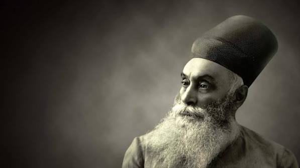
Exhibit 01
Jamsetji Nusserwanji Tata (1839–1904)
View full profile →
Case studies in enterprise, Swadeshi, self-reliance, philanthropy and nation-building during colonial India.
Enter the exhibitionThe growth of Indian entrepreneurship during British colonial rule was an important part of India's economic and nationalist history. Colonial policies generally favoured British manufacturers, shipping companies and commercial interests, while Indian entrepreneurs faced shortages of capital, technological dependence and competition from imported goods. Nevertheless, Indian business leaders established enterprises in textiles, steel, chemicals, engineering, shipping, banking, automobiles and other industries. Many regarded industrial development as more than a means of earning profit: it was also a path towards economic self-reliance.
Entrepreneurs such as Jamsetji Tata, G.D. Birla, Prafulla Chandra Ray and V.O. Chidambaram Pillai challenged foreign dominance in different sectors. Others created educational institutions, hospitals, research centres and industrial townships. Collectively, these entrepreneurs helped develop indigenous managerial skills, generated employment and created institutions that continued to influence India's economy after independence. Their achievements demonstrate how entrepreneurship became connected with the wider ideas of Swadeshi, nation-building and economic independence.

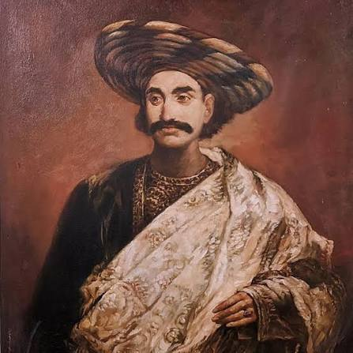
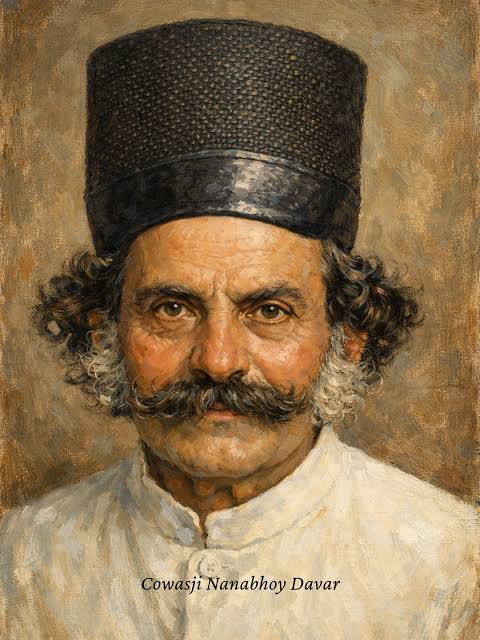
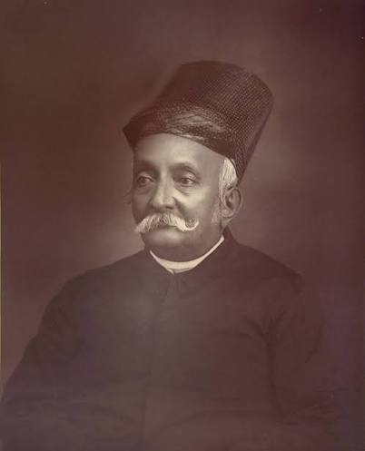
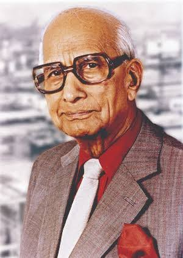
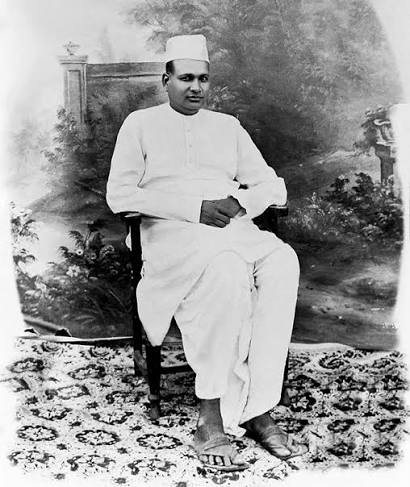
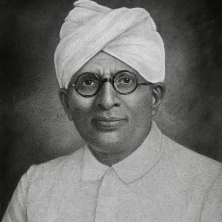
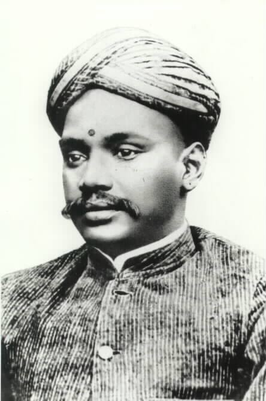
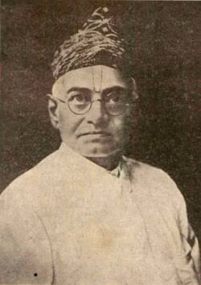
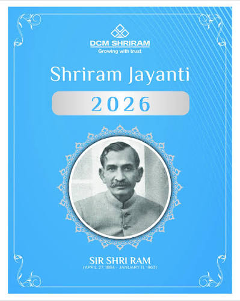
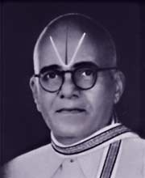
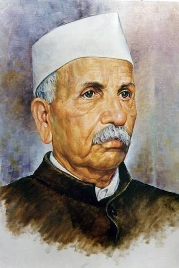
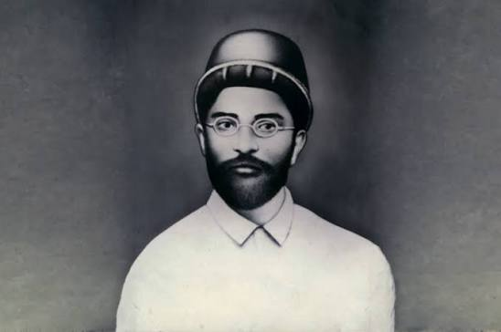
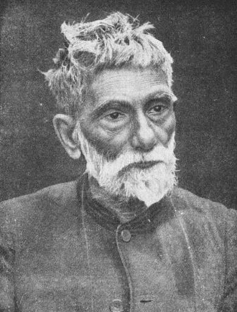
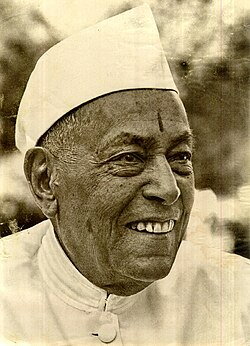
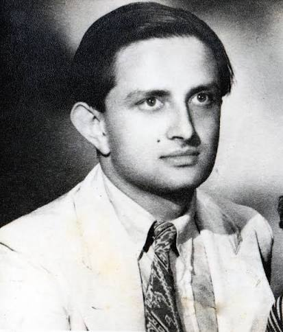
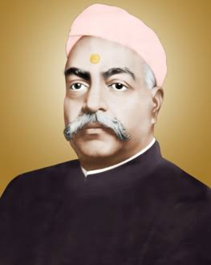
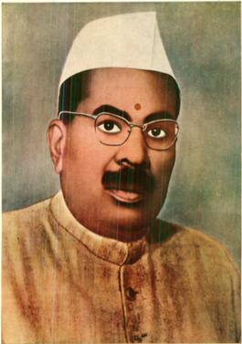
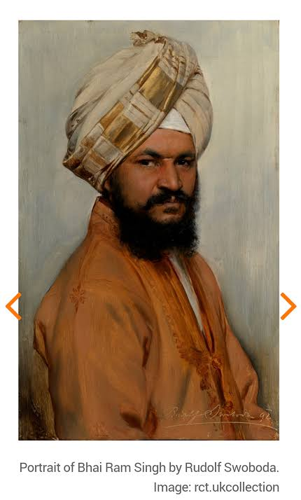
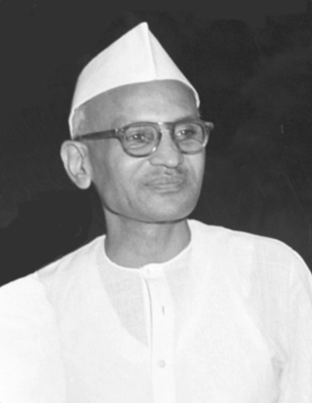
These entrepreneurs demonstrate that India's industrial development did not begin after independence. During colonial rule, Indian businessmen, engineers, scientists and merchants were already creating enterprises capable of challenging foreign commercial dominance. Their achievements ranged from Jamsetji Tata's vision for steel and scientific research and P.C. Ray's indigenous chemical industry to V.O. Chidambaram Pillai's challenge to British shipping and Laxmanrao Kirloskar's Indian-made agricultural machinery.
A common feature of many of these entrepreneurs was their belief that economic development and national progress were interconnected. Some directly participated in the Swadeshi and freedom movements, while others promoted self-reliance by establishing Indian-owned industries. Their philanthropy created schools, colleges, research institutions, hospitals and industrial communities.
Thus, these pioneers contributed not simply to private business empires but to the creation of India's industrial capabilities, technical knowledge and institutional infrastructure. Their work provided important foundations upon which independent India's modern economy was subsequently built.